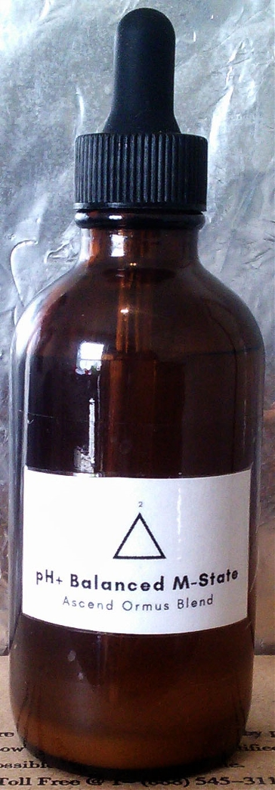
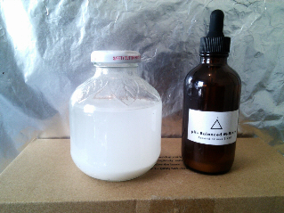
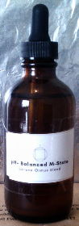
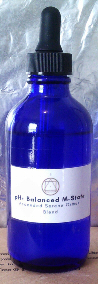

2 - Ascend Ormus Blend
The focus of the Ascend blend is to aid one with the expansion of awareness of the Mind Complex. This blend has a whiter hue because it contains Ormus made with a slightly higher concentration of the white Salt of the Dead Sea, with significantly less black Cyprus Sea Salt. This blend might fair as a good entry point for those that have recently detoxed their body and would like to take their meditation expansion to the next level.
Balances of the Mind
Without the additional nervous energy that is contributed by a quite intoxicated Body Complex, the Mind Complex (which extends beyond the body and brain) can more effectively manage and handle stress. This is what it's supposed to do anyway, too handle any POTENTIAL stressing while balancing the differences in time that it is not stressed. With a ravaging nervous system Body Complex riddled with nutrient blockers (toxins) balancing this difference in time becomes exponentially more difficult, especially for those just starting on their path of Mind/Body/Spiritual integrity.
Stress and Peace

Stress and peace go hand in hand. The stress is both the ebb and flow and the peace is the balance between the ebb and flow. As with the balance(s) with light and dark the expression of all of the 4 physical elements fire, air, water, and earth (3 of which are expressed as physical matter precipitates). A thing that all of these elements have in common is that they all expression themselves through various focuses of radiation (expansion) as well as gravity (contraction). Many refer to light as the 5th (fifth) element, but It is distinct balances between the light and gravity that gives rise to the experiences that we all know as fire, air, water, and earth. What does this have to do with peace be the balance between the ebb and flow of stress? Simply put, without having moments of peace we would never have been able to effectively gain knowledge of the distinct experience that each element Is. It is these elemental experiences that form the basis of the physical experience that we all share. Without peace of body and mind, attempting to interpret the distinct relationship(s) between the physical elements of the "outside" environment is near impossible. Which means it becomes much more difficult for one to know themselves because we were created with those same elements we consider "outside" our Selves. Those same elements are within all of us.
Image In: Mind Flex Exercising
Image an environment where all 4 physical elements (70-degree weather, cool slight breeze, calm lake, soft earth and grass) are all in balance. This alone will bring most people to a calm state (which becomes much easier after detoxing). And balance doesn't have to mean calm, one could have imaged a stream, river, cyclical gusts of wind, rain or even a warm fire. But if the ebb and flow of any of the elemental experiences are too far stressed over the others then any particular balance of peace becomes increasingly difficult to maintain. This does not mean that stress is not useful in any way. I'm sure I'm not the only that can say they've achieved things they never thought while in a stressful situation. But with peace and serenity as a base prior to using stress as a catalyst gives one more opportunity to know themselves than the other way around. I would image in that there would be a spiritually infinite amount of ways this can be expressed through the Minds and hearts of individuals beyond the finite "surface" expressions of the physical. Just look at how much more "empty" space versus atoms there is.
2 - Ascend Ormus Blend:
$37.22 (ship w/ tracking included)
|  |
| Ascend Ormus Blend (4 fl oz) |
All Ormus birthed through me was brought through using only natural ingredients from the Earth:
pH 7+ Spring Water
Alkaline Sea Salts near the 7+ Earth Chakras and Vortexes
Prayer
Non-polar Pyramid Energy
All purchased Ormus will be sent in EMF resistant packaging. Keep the included foil handy.
!CAUTIONS!
Ormus is not an
"ascension pill"
!Meditation REQUIRED!
|
Suggestions
|
With Source Love,
-Aaron
Other FIRTH ETHER Ormus Blends: These need not necessarily be taken in a specific order. All three might not necessarily need to be taken to achieve desired results. If you feel you are already at a specific point Spiritually and one blend in particular resonates with you (not just the Ascended Serene Blend guys) then feel free to start from there. Ormus is really only for those that take meditation, prayer, and their physical wellbeing seriously. So for those recently starting on their spiritual path of Seeking are strongly encouraged to take the blends here in order from 1 to 2 to 3, as each bottle will last between 1 to 2 months following the suggestions stated above. | |
| 1 - Serene  Serene Ormus Blend (4 fl oz) $35.11 | 3 - Ascended Serene  Ascended Serene Ormus Blend (4 fl oz) $39.33 |